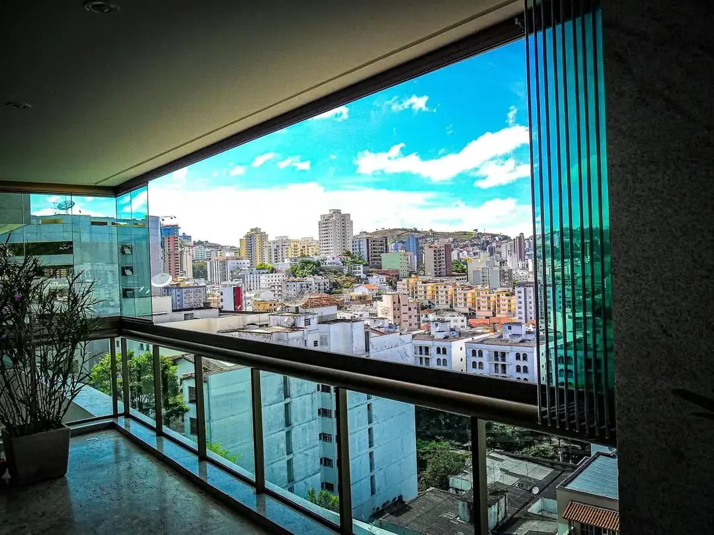
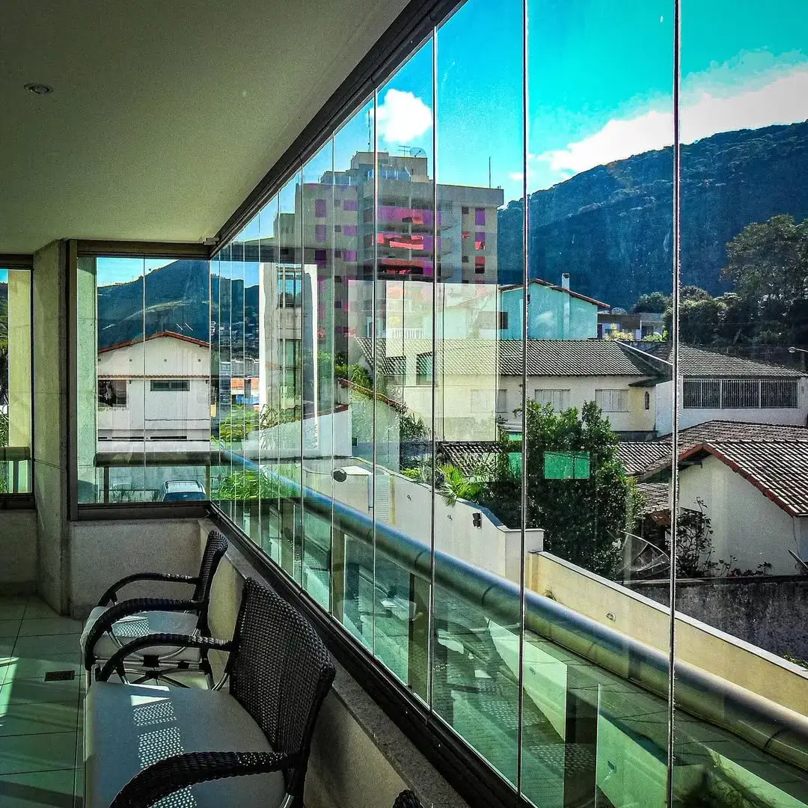
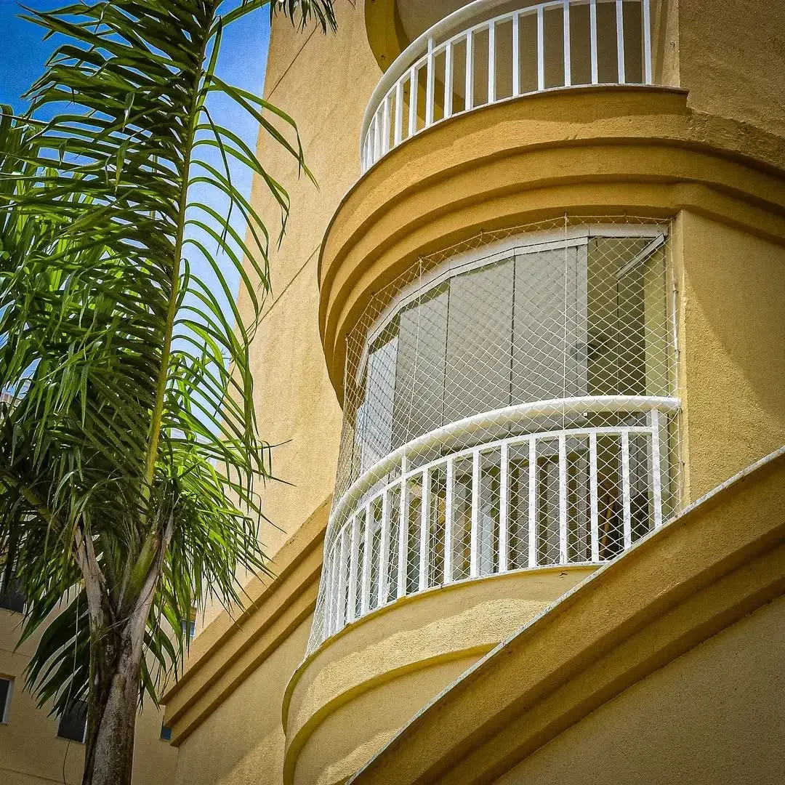
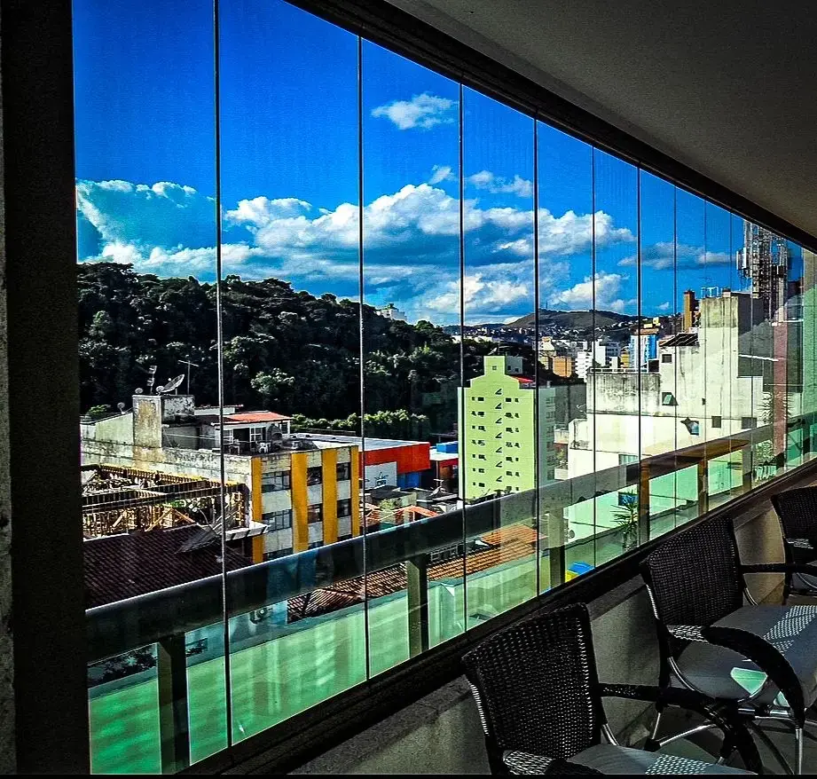
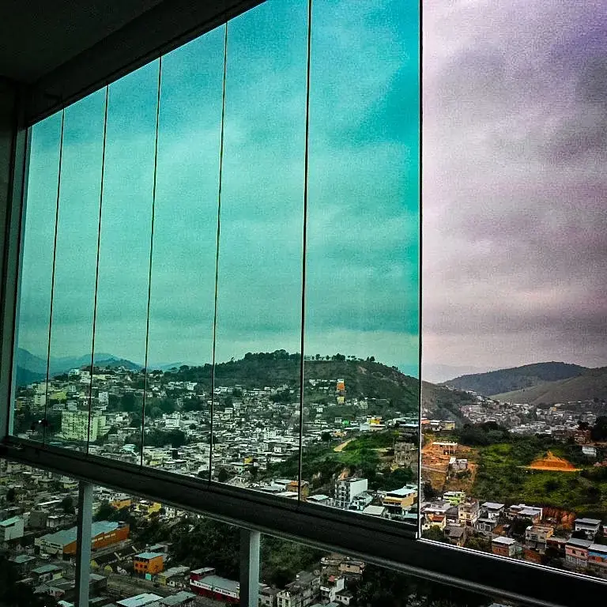

Arquitetura em vidro Juiz de Fora · MG
Vista livre.
Presença mínima.
Fechamento de varandas.
Mais possibilidades para o espaço.
A mesma relação com a paisagem.

01 / Essência
A arquitetura fica.
A vista também.
A varanda é o encontro entre a casa e o exterior. O fechamento em vidro permite repensar esse espaço, preservando a continuidade visual.
Transparência, movimento e atenção ao que já existe. Cada solução começa pela leitura do ambiente.
02 / Projetos
Entre o espaço
e a paisagem.
Uma seleção de imagens de obras publicadas pela Cortina de Vidro JF. Diferentes olhares sobre o fechamento em vidro.
{kind=link}

Continuidade visual
Fechamento de varanda · vista interna
{kind=link}

Em diálogo com a fachada
Fechamento de varanda · vista externa
{kind=link}

Uma outra perspectiva
Fechamento de varanda · vista interna
{kind=link}

O desenho da abertura
Painéis e paisagem · detalhe de abertura
03 / O sistema
O espaço muda.
A vista permanece.
Os painéis deslizam e se recolhem. Explore a sequência para entender o princípio de abertura.
Painéis alinhados para fechar o vão, sem esquadrias verticais entre os vidros.
Ilustração conceitual, sem escala. Quantidade de painéis e configuração de abertura dependem da avaliação do local.
04 / Leitura técnica
Precisão em
cada encontro.
Materiais, movimento e manutenção. O sistema começa nos detalhes.
Informações de materiais divulgadas pela empresa. Especificações e condições de instalação são definidas na avaliação técnica.
- 01 Perfis em alumínio
- Estrutura que acompanha as linhas do fechamento.
- 02 Roldanas em aço inox e nylon
- Componentes do mecanismo de deslizamento.
- 03 Sem esquadrias verticais
- Continuidade visual entre os painéis de vidro.
- 04 Abertura para o interior
- Acesso aos vidros pelo lado interno para facilitar a limpeza.
05 / Seu espaço
Sua varanda.
O próximo passo.
Conte como é o ambiente e o que você procura. Ao final, revise o resumo e leve essas informações para a conversa com a equipe.
Uma avaliação começa
com as perguntas certas.
Sem cálculo de preço. O envio acontece somente quando você confirmar a mensagem no WhatsApp.
06 / Da conversa ao projeto
Clareza em cada etapa.
O primeiro passo é entender o seu espaço. A equipe orienta os próximos, conforme as condições do local.
- 01
Conversa
Seu ambiente, suas necessidades e o que você espera do fechamento.
- 02
Avaliação
Medidas e condições do local para estudar a solução.
- 03
Proposta
Escopo, prazo e condições definidos para o seu projeto.
- 04
Instalação
Execução conforme o escopo acordado e orientações de uso.
07 / Antes de decidir
Boas perguntas.
Respostas claras.
O fechamento tem vedação acústica?
Não. A empresa informa redução de ruídos, mas não comercializa o sistema como vedação acústica. O resultado depende das condições do ambiente.
Como funciona a limpeza dos vidros?
A abertura para dentro permite acesso pelo lado interno. Solicite à equipe as orientações de uso e manutenção para a configuração instalada.
Qual é a garantia?
A empresa divulga garantia de até 5 anos. Confirme prazo, cobertura e condições na proposta do seu projeto.
Quais localidades são atendidas?
Juiz de Fora e região, em um raio divulgado de até 200 km. Confirme com a equipe a disponibilidade para o seu endereço.
O simulador gera um orçamento?
Não. Ele organiza informações para a primeira conversa. Medidas, viabilidade, especificações e valores dependem da avaliação técnica.
Uma nova leitura do seu espaço